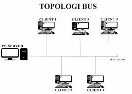
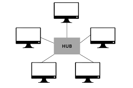
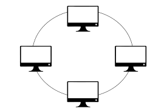
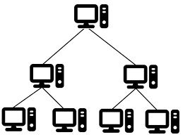
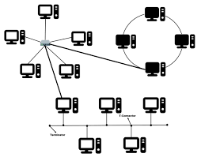

Berikut adalah jenis-jenis Topologi jaringan
| NO | Jenis Topologi Jaringan | Gambar | Keterangan |
| 1 | BUS |  | Topologi Bus adalah topologi dimana setiap node terkoneksi melalui kabel utama atau bus atau backbone(ini sangat efisien dengan jumlah node yang tidak banyak) |
| 2 | STAR |  | Topologi star adalah topologi dimana setiap node terkoneksi melalui node konektor pusat(topologi ini banyak dipakai karna kemudahanya) |
| 3 | RING |  | Topologi ring adalah topologi dengan hubungan antar node terjadi antar satu node dengan note tetangganya dan membentuk konfigurasi lingkaran atau cincin. |
| 4 | TREE |  | Topologi Tree adalah topologi yang membentuk hubungan antar node seperti cabang pada pohon(biasa digunakan untuk pengaturan jaringan pada institusi yang memiliki hirarki) |
| 5 | HYBRID |  | Topologi Hybrid adalah topologi yang menggabungkan du atau lebih topologi jaringan,seperti topologi bintang,cincin, dan mesh |
Topologi jaringan yang lebih kompleks cenderung membutuhkan biaya instalasi yang lebih tinggi, karena melibatkan lebih banyak waktu, kabel, dan perangkat. Jangkauan jaringan yang lebih luas memerlukan kabel lebih banyak, dan jenis kabel juga mempengaruhi biaya. Kabel fiber optic, meskipun lebih cepat dan memiliki kapasitas lebih besar, lebih mahal dibandingkan dengan kabel tembaga. Pemilihan topologi yang tepat harus mempertimbangkan kinerja jaringan, jangkauan, jumlah komputer yang terhubung, dan anggaran.
Skalabilitas adalah faktor penting dalam memilih topologi jaringan, terutama jika ada rencana untuk memperluas jaringan di masa depan. Topologi yang mudah dimodifikasi, seperti topologi bintang, memungkinkan penambahan atau pengurangan node dengan gangguan minimal. Berbeda dengan topologi Ring, yang bisa menyebabkan seluruh jaringan tidak berfungsi saat menambah node baru. Topologi yang mudah dimodifikasi membantu menghemat waktu dan mempermudah proses instalasi.
Berikut Komponen yang membentuknya adalah:
Untuk mempermudah pemahaman, jaringan komputer dikonsep dalam model berlapis (layered model), dimana setiap lapisan memiliki tugas tertentu, mirip dengan sistem tubuh manusia yang terdiri dari berbagai organ dengan fungsi spesifik.
Berikut adalah arsitektur model jaringan berlapis
Open System Interconnection (OSI) Model adalah model yang diciptakan oleh “International Organization for Standardization (ISO)” untuk mengatur standar protokol dan format data yang berbeda dari banyak perusahaan penyedia jaringan komputer. Model ini menggunakan model lapisan yang terdiri atas 7 lapisan, seperti tampak pada Gambar berikut:

Application Layer
Lapisan ini bertanggung jawab untuk menyediakan antarmuka ke pengguna aplikasi. Dengan protokol seperti hypertext transfer protocol (HTTP), file transfer protocol (FTP), domain name services (DNS)
Presentation Layer
Bertanggung jawab menerjemahkan dan mengamankan data, menggunakan protokol seperti SSL, TLS, dan RDP
Session Layer
Menangani koneksi antar komputer, mengelola sesi, dan memastikan autentikasi tidak diulang dalam waktu tertentu. Contoh protokol: NetBIOS (IBM), Point-to-point Tunneling Protocol (PPTP).
Transport Layer
Mengatur pengiriman data end-to-end, memecah data menjadi paket, memberikan nomor urut, dan memastikan daa tiba dengan benar. Contoh protokol: TCP, UDP.
Network Layer
Bertanggung Jawab atas alamat unik antar perangkat dalam jaringan. Contoh protokol: IP, ARP, ICMP.
Data Link Layer
Mengelola transfer data antar perngkat dalam satu jaringan, termasuk pengalaman MAC dan error checking. Contoh protokol: PPP
Physichal Layer
Lapisan Fisik mendefinisikan perangkat keras untuk transmisi data seperti NIC, repeater, dan hub. Lapisan ini mengatur sinkronisasi bit, arsitektur jaringan, topologi, dan pengkabelan. Tanggung jawabnya juga termasuk pengiriman data dalam bentuk bit dan encoding. Protokol yang digunakan di lapisan ini antara lain Ethernet, USB, dan Bluetooth.
TCP/IP adalah protokol utama yang digunakan di internet, dikembangkan pada 1980-an untuk menghubungkan berbagai komputer dan jaringan. Protokol ini menggunakan IP address untuk menghubungkan sistem yang berbeda seperti Windows dan Linux. Keunggulannya adalah standar terbuka yang dapat beroperasi tanpa tergantung pada perangkat keras atau sistem operasi. TCP/IP membagi data menjadi paket kecil dan IP menambahkan alamat tujuan. Paket data dapat melewati jalur yang berbeda dengan bantuan router. Jika terjadi kerusakan, perangkat penerima akan meminta data dikirim ulang. Gateway memungkinkan jaringan berbeda berkomunikasi dengan internet.
Transmisi data adalah proses berbagi atau bertukar data antara dua objek, alat, atau sistem. Bagian penting dari komunikasi data dapat dilihat pada gambar berikut.

Transmisi data pada jaringan komputer dan internet umumnya tidak dilakukan dalam ukuran besar untuk menghindari kendala pada kemampuan medium dan untuk memastikan keandalan pengiriman. Data dikirim dalam bentuk paket kecil yang disebut data packets atau datagram. Ukuran paket data bisa tetap atau dinamis, tergantung kebutuhan sistem, namun biasanya sekitar 64 KiB agar lebih mudah dikelola.
Paket Data terdiri dari 3 bagian utama:
Untuk setiap paket, packet header, berisi:
Lalu untuk Packet payload berisi:
Dan terakhir Packet trailer berisi:
Packet switching adalah salah satu cara transmisi paket data yang paling banyak digunakan, dimana data akan dipecah ke dalam beberapa paket data dan dikirimkan secara independen dari titik awal ke titik tujuan.
misalnya kalian sedang mengirimkan sebuah surel yang berisi foto kalian dari laptop kalian ke ponsel milik teman kalian. Surel dan foto tersebut akan dipecah dalam beberapa paket data sebelum dikirimkan. Paket-paket data akan dikirim melalui jalur atau rute dari komputer A ke komputer B, melalui node yang bisa berupa router, switch, komputer, dan lain sebagainya.
Berikut gambar jalur pengiriman paket data dari komputer A ke komputer B:
Berikut gambar pergerakan pengiriman paket data dari komputer A ke Komputer B:
Berikut adalah kelebihan dan kekurangan paket switching:
| No | Kelebihan | Kekurangan |
| 1 | Paket data dapat dikirimkan dari sumber ke tujuan tanpa jalur khusus (dedicated channel) | Paket data bisa hilang dan harus dikirimkan kembali |
| 2 | Kegagalan pengiriman rendah, karena router dapat melakukan pengiriman ulang (rerouting) paket jika terjadi kegagalan | Proses menyusun kembali paket data yang membutuhkan waktu |
| 3 | Banyak user bisa menggunakan jaringan yang sama | Adanya delay (jeda) dan rentan terhadap error sehingga sulit digunakan untuk pengiriman data yang cepat dan berkualitas tinggi seperti voice call |
| 4 | Memungkinkan pengiriman data kecepatan tinggi | - |
Adapun bentuk-bentuk kesalahan yang dapat terjadi pada pengiriman data yaitu
Kesalahan yang terjadi pada proses pengiriman data tersebut dapat dikendalikan dengan dua cara yaitu:
Beberapa cara kesalahan pada pengiriman data, diantaranya yaitu:
Adalah salah satu meode untuk mengecek apakah data yang ditransmisikan sesuai dengan aslinya. Parity check berguna ketika kesalahan pengiriman data hanya muncul pada satu bit, namun ketika kesalahan terjadi pada dua bit data, maka parity check tidak dapat mendeteksinya
Checksum adalah metode yang digunakan untuk mengecek apakah data yang dikirimkan pada saat transmisi berubah atau corrupted.
Adapun metode perbaikan kesalahan ini dapat dilakukan dengan dua cara, yaitu:
Backward Error Correction adalah cara perbaikan kesalahan dengan cara permintaan kembali pengiriman data dari pengirim ketika data dideteksi adanya kesalahan. Misalnya jika koneksi menggunakan serat optik maka pengiriman data mudah dilakukan namun jika pengiriman data menggunakan perangkat nirkabel maka cara ini tidak efektif.
Forward Error Correction adalah cara perbaikan kesalahan dengan menggunakan algoritma perbaikan kesalahan untuk mengembalikan data yang corrupted. Untuk dapat melakukan perbaikan kesalahan, penerima data harus mengetahui secara persis bit mana yang corrupted dengan menggunakan parity bit sebagai salah satu cara.
Data analog dan digital direpresentasikan dalam bentuk sinyal digital ataupun sinyal analog ketika akan ditransmisikan :
Ketika sinyal terkirim, sinyal sering kali menurun kualitasnya. Penurunan kualitas disebabkan oleh beberapa hal, seperti:
Media transmisi terbagi menjadi dua jenis yaitu:
Setiap media memiliki kapasitas kanal (channel capacity), yaitu kecepatan pengiriman data yang bergantung pada tiga faktor yaitu:
Macam-macam transmisi
Transmisi digital adalah proses pengiriman data dalam bentuk digital. Data dapat berupa analog atau digital, tetapi di komputer, data berbentuk diskrit digital. Untuk mengirimkan data secara digital, diperlukan konversi data ke bentuk digital. Data digital adalah data dalam bentuk biner 0 dan 1 yang membentuk deretan (urutan). Sinyal digital akan merepresentasikan data digital dalam bentuk data diskret, seperti tampak pada gambar

Line Coding adalah transmisi data dengan mengkonversi data digital menjadi sinyal digital. tiga cara untuk merepresentasikan data digital menjadi sinyal digital, yaitu dengan cara encoding unipolar, polar, atau bipolar.
Unipolar Encoding adalah cara pengkodean sinyal dengan merepresentasikan data dengan menggunakan level tegangan tunggal (single voltage level). Bilangan biner 1 akan direpresentasikan dengan tegangan tinggi, dan bilangan biner 0 direpresentasikan dengan tanpa tegangan. Unipolar encoding juga disebut dengan Unipolar-Non-Return-To-Zero.
Polar Encoding adalah metode pengkodean sinyal dengan beberapa tingkat tegangan untuk merepresentasikan biner. Terdiri dari NRZ, RZ, Manchester, dan Differential Manchester. Pada Polar NRZ, tegangan positif mewakili 1 dan negatif mewakili 0, tanpa kondisi netral. NRZ terbagi menjadi NRZ-L, di mana tegangan sesuai nilai biner, dan NRZ-I, di mana perubahan tegangan menandakan 1, sedangkan 0 tidak mengubah tegangan.

NRZ-L (Non-Return to Zero Level) adalah metode pengkodean yang menggunakan tegangan positif untuk merepresentasikan 1 dan tegangan negatif untuk 0. Pengkodean ini diterapkan pada standar RS-232 yang digunakan dalam konektor DB-25, seperti pada printer dot matrix.

NRZ-I (Non-Return to Zero Inverted) adalah metode pengkodean yang menentukan data berdasarkan transisi tegangan. Jika terjadi perubahan tegangan, data direpresentasikan sebagai 1, sedangkan jika tidak ada perubahan, data direpresentasikan sebagai 0 (atau sebaliknya, tergantung standar). NRZ-I digunakan dalam protokol USB, yang umum ditemukan pada laptop, ponsel, dan printer.

Return to Zero (RZ) adalah metode pengkodean yang mengatasi kelemahan NRZ dalam sinkronisasi data. RZ menggunakan tiga level tegangan: positif untuk 1, negatif untuk 0, dan nol sebagai transisi antar sinyal. Pengkodean ini banyak digunakan dalam komunikasi optik, seperti infrared.

Bipolar Encoding adalah metode pengkodean yang menggunakan tiga tingkat tegangan: positif, negatif, dan nol. Tegangan nol merepresentasikan 0, sementara 1 direpresentasikan secara bergantian dengan tegangan positif atau negatif
Konversi Analog ke Digital
Untuk mentransmisikan data analog dalam bentuk digital, digunakan teknik modulasi, salah satunya Pulse Code Modulation (PCM). PCM mengubah gelombang analog menjadi data digital melalui tiga langkah utama: Sampling, Kuantisasi, dan Pengkodean.
Sampling dalam konversi sinyal analog ke digital dilakukan pada interval waktu tertentu. Menurut Teorema Nyquist, sampling rate harus minimal dua kali frekuensi tertinggi dari sinyal agar dapat direkonstruksi dengan baik. Sebagai contoh, rentang pendengaran manusia 20 Hz – 20 kHz memerlukan sampling rate 40 kHz. Dalam aplikasi nyata: Telepon menggunakan sampling rate 8 kHz (8.000 sampel per detik). Compact Disc Audio (CDA) menggunakan 44.1 kHz, menghasilkan kualitas suara mendekati aslinya.

Kuantisasi adalah proses untuk memberikan besaran satuan angka dari amplitudo data diskret hasil sampling.
Hasil kuantisasi selanjutnya dikodekan menjadi format digit biner.
Mode Transmisi
Data digital dapat ditransmisikan dengan dua mode yaitu paralel dan serial.
adalah transmisi yang dilakukan dengan membentuk sinyal digital dalam panjang yang tetap (fixed). Transmisi paralel memiliki keunggulan kecepatan pengiriman, namun memiliki kelemahan dengan banyaknya jalur yang harus dibuat.
adalah transmisi sinyal digital melalui jalur tunggal secara berurutan dalam bentuk antrian. Transmisi serial dapat dilakukan dengan cara sinkron atau asinkron, Transmisi digital serial asinkron menggunakan cara pengiriman tanpa memperhatikan timing namun menggunakan pola (pattern) pada bit data. Transmisi digital serial sinkron menggunakan cara pengiriman yang serentak. Keunggulan dari transmisi serial sinkron ini adalah kecepatannya yang tinggi dan tidak memiliki overhead karena penanda awal (header) dan penanda akhir (footer) dari bit data seperti pada transmisi asinkron.
Transmisi analog adalah proses pengiriman data secara analog. Data yang akan dikirimkan dapat berupa data analog atau digital. Data analog tidak dapat langsung dikirimkan, data ini harus diubah menjadi sinyal analog agar dapat ditransmisikan. Sedangkan untuk data digital juga harus diubah menjadi sinyal analog agar dapat dikirimkan.
Sinyal analog adalah sinyal yang memiliki amplitudo, frekuensi, dan fase, sehingga konversi data digital ke analog dapat dilakukan dengan tiga cara ini, yaitu: Amplitude Shift Keying, Frequency Shift Keying, dan Phase Shift Keying.
Amplitude Shift Keying menggunakan mekanisme mengubah digit biner menjadi amplitudo pada sinyal pembawa analog (analog carrier signal).
Frequency Shift Keying adalah penciptaan sinyal analog menggunakan mekanisme perubahan frekuensi pada sinyal pembawa analog (analog carrier signal).
Phase Shift Keying adalah penciptaan sinyal analog menggunakan mekanisme perubahan fase pada sinyal pembawa analog (analog carrier signal).
Agar dapat dikirimkan secara analog data analog harus dimodifikasi menjadi sinyal analog. Modifikasi ini biasa disebut dengan modulasi analog. Konversi data analog menjadi sinyal analog dapat dilakukan dengan tiga cara, yaitu: Amplitude Modulation, Frequency Modulation, dan Phase Modulation.
Amplitude Modulation (AM) adalah teknik modulasi awal di mana amplitudo sinyal pembawa analog diubah sesuai dengan data analog yang akan ditransmisikan. proses ini dilakukan dengan mengalikan data analog dengan gelombang pembawa. Frekuensi data dan fase gelombang pembawa tetap, sedangkan amplitudo mencerminkan data yang dikirim.
Pada modulasi ini, frequency dari sinyal pembawa analog akan dimodifikasi sesuai dengan perubahan data analog. Amplitudo dan Fase dari gelombang modulasi tidak berubah. Keunggulan dari Frequency Modulation dibanding dengan modulasi lain adalah kualitas dari sinyal yang dihasilkan lebih baik dan memiliki derau noise yang lebih rendah.

Pada modulasi ini, fase dari sinyal pembawa analog akan dimodifikasi sesuai dengan perubahan gelombang data analog. Amplitudo dan frekuensi dari gelombang modulasi tidak berubah.